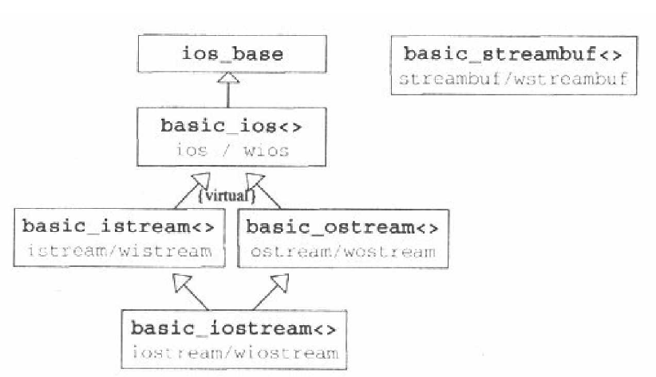
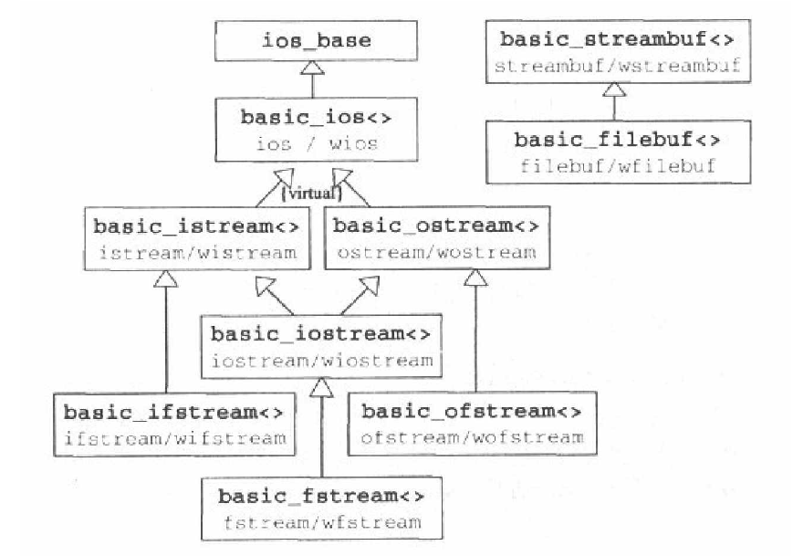
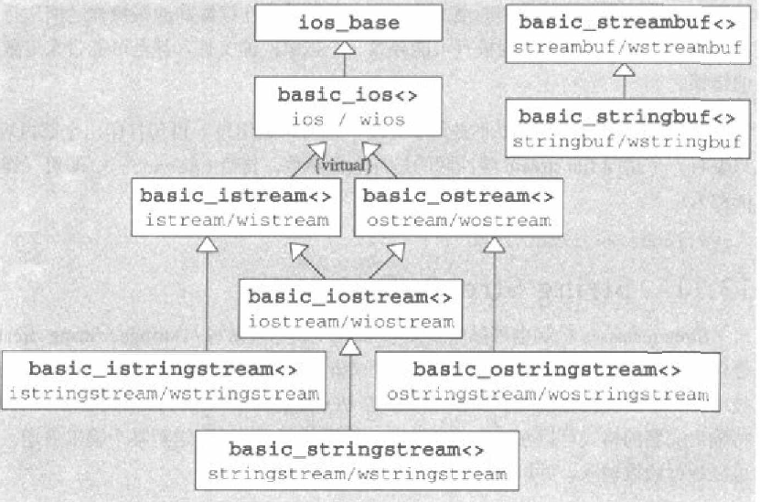

重要全局对象
| 对象名 | 描述 |
| cin | 标准输入通道,操作系统通常将它和键盘连接 |
| cout | 标准输出通道，操作系统通常将它和屏幕连接 |
| cerr | 标准错误输出通道，操作系统通常将它和屏幕连接，默认无缓冲装置 |
| clog | 标准日志通道，操作系统将它和cerr连接的设备连接，默认有缓冲 |
操控器
用来控制stream对象，常常只会改变输入或格式输出的解释方式
#include <iomanip>
| 操控器名 | 类别 | 描述 |
| endl | ostream | 输出'\n'，并刷新output |
| ends | ostream | 输出'\0' |
| flush | ostream | 刷新output |
| ws | istream | 读入并忽略空格 |
继承图表

| class | 描述 |
| ios_base<> | 定义了所有与字符型别及相应之字符特性无关的属性 |
| basic_ios<> | 定义出与字符型别及相应之字符特性相关的streamclass共同属性 |
| basic_istream<>/basic_ostream | 分别定义出用于读写的对象 |
| basic_iostream<> | 既可以对亦可写点对象 |
| basic_streambuf<> | 定义所有可读或可写的stream接口 |
pair
ios_base内包含一些常量以表示stream状态
| 常量 | 含义 |
| goodbit | 被设置为0 代表一切都好 |
| eofbit | 遇到end-of-file |
| failbit | 错误；某个io未完成 |
| badbit | 毁灭性的错误 |
| 成员函数 | 含义 |
| good() | 若goodbit设置，返回true |
| eof() | 若eofbit设置，返回true |
| fail() | 若failbit设置，返回true |
| bad() | 若badbit设置，返回true |
| rdstate() | 返回当前设置的所有标志 |
| clear() | 清除所有标志 |
| clear(state) | 清除所有标准后设置state标志 |
| setstate(state) | 加设state标志 |
| 成员函数 | 含义 |
| operator void* () | stream是否未出错 |
| operator!() | stream是否出错 |
无格式输入输出
读字符
| 成员函数 | 读取，直到... | 字符数 | 添加结束符 | 返回值 |
| get() | 读入下一个字符 | 1 | 否 | 读入的字符或常量EOF |
| get(s,num) | eof或new line(结果不包含'\n') | 最多num-1 | 是 | istream |
| get(s,num,t) | eof或new line 或t(结果不包含'\n'和t) | 最多num-1 | 是 | istream |
| getline(s,num) | eof或new line(结果包含'\n') | 最多num-1 | 是 | istream |
| getline(s,num,t) | eof或new line 或t(结果包含'\n'和t) | 最多num-1 | 是 | istream |
| read(s,num) | eof(遇到end-of-file出错并设置相应 stream状态) | 最多num | 否 | istream |
| readsome(s,num) | eof(遇到end-of-file不会出错且不会设置 stream状态) | 最多num | 否 | count |
写
ostream& ostream::put(char c);
c写入stream、
ostream& ostream::write(const char* str,streamsize count);
str中的count个字符写入到stream需保证str中至少有count个字符 否则会导致未定义行为
ostream& ostream::flush();
刷新缓冲区
格式化
std::locale locale=std::wcout.imbue(std::locale("chs",std::locale::all ^ std::locale::numeric));
以std::ios_base::fmtflags表示格式
| 成员函数 | 含义 |
| setf(flags) | 添加flags格式，返回所有原本格式 |
| setf(flag,mask) | 配合掩码mask添加格式，返回所有原本格式 |
| unsetf(flags) | 清除flags格式 |
| flags() | 返回所有已设立格式 |
| flags(flags) | 将flags设为新的格式，返回所有原本格式 |
| copyfmt(stream) | 从stream中复制格式 |
| 操控器 | 含义 |
| setiosflags(flags) | 为stream添加flags格式 相对于setf(flags) |
| resetiosflags(mask) | 清除mask格式 相对于setf(0,mask) |
| 格式 | 含义 | 默认 |
| boolalpha | 设置 则以文字表示bool | 未设置 |
| 对应操控器 | ||
| boolalpha | 设置boolalpha | |
| noboolalpha | 清除boolalpha | |
数值 | ||
| 格式 | ||
| showpos | 在正数前加上记号 | |
| uppercase | 使用大写字符 | |
| oct | 以八进制读写 | |
| dec | 以十进制读写 | |
| hex | 以十六进制读写 | |
| none | 以十进制输出：以字符串中指定格式读写 | |
| 对应操控器 | ||
| oct | ||
| dec | ||
| hex | ||
| 格式 | ||
| showbase | 若设置 显示出数字进制||
| 对应操控器 | ||
| showbase | ||
| noshowbase | ||
浮点 | ||
| 格式 | ||
| fixed | 对浮点使用小数计数 | |
| scientific | 对于浮点使用科学计数 | |
| none | 使用上两者中最合适的计发 | |
| 相关成员函数 | ||
| precision() | 返回浮点精度 | |
| precision(val) | 令浮点精度为val | |
| 格式 | ||
| showpoint | 总是写出小数点 | |
| 对应操控器 | ||
| showpoint | ||
| noshowpoint | ||
| setprecision(val) | ||
| fixed | ||
| scientific | ||
| 格式 | ||
| skipws | 调用>>读取数值时自动跳过起始空格 | |
| nounitbuf | 每次输出清空output缓冲区 | |
字段 | ||
| 成员函数 | ||
| width() | 返回当前字段宽度/*所谓字段宽度 只能限制最小字段宽度*/ | |
| width(val) | 设置字段宽度 该设置只应用于下次格式化输出 之后stream会自动恢复默认 | |
| fill() | 返回当前填充字符 | |
| fill(c) | 设置c为填充字符 | |
| left | 左对齐 | |
| right | 右对齐 | |
| internal | 符号靠左 数值靠右 | |
| None | 右对齐 | 设置 |
| 对应操控器 | ||
| setw(val) | 相当于with(val) | |
| setfill(c) | ||
| left | ||
| right | ||
| internal |
文件存取
继承图表  函数 std::fstream() std::fstream(const char * filename) std::fstream(const char * filename,std::ios_base::openmode mode); open close is_open std::ios_base::openmode mode取值
| 值 | 含义 |
| ios::app | 添加到文件尾 |
| ios::trunc | 覆盖文件 |
| ios::in | 读取文件 |
| ios::out | 写入文件 |
| ios::binary | 以二进制打开 |
| ios::beg |
| ios::cur |
| ios::end |
注意
文件与class构造打开 析构自动关闭 对于既可读又可写的stream 不能随便转换读写属性 转换时必须先seek到当前位置再转换
连接io与重定向
以tie()完成松耦合
可以将一个stream连接到一个output stream.两者的缓冲区将同步 output stream将在另一个stream输入或输出前先清空自己的缓冲区
| 成员函数 | 含义 |
| tie() | 返回当前stream连接到的output stream的指针 |
| tie(ostream *out) | 将stream连接到out,返回以前的连接 |
以stream 缓冲区完成 紧耦合
使stram共享缓冲区
| 成员函数 | 含义 |
| rdbuf() | 返回stream buffer缓冲区 |
| rdbuf(streambuf *) | 将指定缓冲区安装到当前stream，返回先前缓冲区指针 |
其他stram都会销毁他们最初分配的stream缓冲区，但不会销毁以rdbuf()安装的缓冲区
string stream
继承图表  类似于文件io 可用seekp等改变流读取或写入位置
| 成员函数 | 含义 |
| str() | 将缓冲区内容以string返回 |
| str(string) | 将string作为缓冲区的内容 |
example
#include<sstream>
#include<iostream>
int _tmain(int argc, _TCHAR* argv[])
{
std::ostringstream o;
o<<12<<"this is a test";
o.seekp(0,std::ios::beg);
o<<"34";
std::cout<<o.str()<<std::endl;
std::string str;
int x;
std::stringstream io("12",std::ios::out|std::ios::in);
io.seekp(0,std::ios::end);
io<<"fuck";
io.seekg(0,std::ios::beg);
io>>x;
io>>str;
std::cout<<x<<str<<std::endl;
system("pause");
return 0;
}
自定义型别
#include <iostream>
class A
{
public:
int a;
int b;
};
template<class charT>
inline std::basic_ostream<charT>& operator<<( std::basic_ostream<charT>& ostream,const A& a)
{
ostream<<a.a<<ostream.widen('\n')<<a.b<<ostream.widen('\n');
return ostream;
}
int _tmain(int argc, _TCHAR* argv[])
{
A a;
a.a=1;
a.b=2;
std::cout<<a;
system("pause");
return 0;
}
若class中有私有成员 当提供虚函数 重载<<中调用之
C 文件操作
所谓返璞归真 余还是觉得 用c操作文件最方便 故记录c函数如下 打开文件 FILE *fopen( const char *filename, const char *mode ); FILE *_wfopen( const wchar_t *filename, const wchar_t *mode ); 读写文件 size_t fwrite( const void *buffer, size_t size, size_t count, FILE *stream ); size_t fread( //返回实际读取count 若最后 一次读取不足size count不会记录 但会读取 实际size大小的数据 void *buffer, size_t size, size_t count, FILE *stream ); int getc( FILE *stream ); wint_t getwc( FILE *stream ); 读写位置 long ftell( FILE *stream ); int fseek( FILE *stream, long offset, int origin ); origin取值 SEEK_SET 从文件的开始处开始搜索 SEEK_CUR 从当前位置开始搜索 SEEK_END 从文件的结束处开始搜索 刷新文件缓冲区 int fflush( FILE *stream );
文件打开方式 mode
mode 含义 文件不存在 r 读 返回NULL 打开失败 r+ 读写 ... w 写 清空文件 w+ 读写 ... a 写 创建文件(若存在 写入到文件尾 fseek不影响写位置) a+ 读写 ftell=0 b 二进制模式打开 不需跟在 上面字符之后如 rb 或 r+b